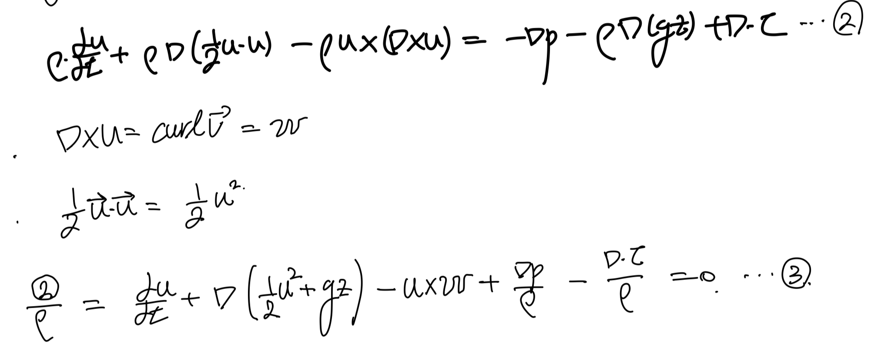

<!DOCTYPE html>
<html lang="ko">
<head>
  <meta charset="utf-8">
  <meta name="viewport" content="width=device-width, initial-scale=1">
  <title>Ch2 Conservation Laws_ part5 Bernoulli equation(3types) | Sehyeog Kim</title>
  <link rel="stylesheet" href="../../../../assets/css/style.css">
</head>
<body>
  <header class="mobile-header">
    <span class="site-title">Sehyeog Kim</span>
    <button class="menu-toggle" aria-label="Menu">&#9776;</button>
  </header>
  <div class="sidebar-overlay"></div>

  <div class="site-wrapper">
    <aside class="sidebar">
      <div class="sidebar-bg">
        
      </div>
      <div class="sidebar-profile">
        
        <h1 class="profile-name">Sehyeog Kim</h1>
        <p class="profile-bio">AI &amp; Computational Engineering<br>Personal Blog</p>
        <div class="profile-links">
          <a href="https://github.com/Sehyeogkim" target="_blank" rel="noopener">
            <svg viewBox="0 0 16 16" width="15" height="15" fill="currentColor"><path d="M8 0C3.58 0 0 3.58 0 8c0 3.54 2.29 6.53 5.47 7.59.4.07.55-.17.55-.38 0-.19-.01-.82-.01-1.49-2.01.37-2.53-.49-2.69-.94-.09-.23-.48-.94-.82-1.13-.28-.15-.68-.52-.01-.53.63-.01 1.08.58 1.23.82.72 1.21 1.87.87 2.33.66.07-.52.28-.87.51-1.07-1.78-.2-3.64-.89-3.64-3.95 0-.87.31-1.59.82-2.15-.08-.2-.36-1.02.08-2.12 0 0 .67-.21 2.2.82.64-.18 1.32-.27 2-.27.68 0 1.36.09 2 .27 1.53-1.04 2.2-.82 2.2-.82.44 1.1.16 1.92.08 2.12.51.56.82 1.27.82 2.15 0 3.07-1.87 3.75-3.65 3.95.29.25.54.73.54 1.48 0 1.07-.01 1.93-.01 2.2 0 .21.15.46.55.38A8.013 8.013 0 0016 8c0-4.42-3.58-8-8-8z"/></svg> GitHub
          </a>
        </div>
      </div>
      <nav class="sidebar-nav">
        <a href="/" class="nav-item nav-home">Home</a>
        <span class="nav-group-label">AI</span>
        <a href="/blog/ai/agentic-ai-theory/" class="nav-item">Agentic_AI_Theory<span class="nav-post-count">8</span></a>
        <a href="/blog/ai/deep-learning/" class="nav-item">Deep-learning<span class="nav-post-count">14</span></a>
        <a href="/blog/ai/machine-learning/" class="nav-item">Machine_Learning<span class="nav-post-count">11</span></a>
        <a href="/blog/ai/sensitivity-analysis/" class="nav-item">Sensitivity_Analysis<span class="nav-post-count">3</span></a>
        <span class="nav-group-label">BioMechanics</span>
        <a href="/blog/biomechanics/blood-flow-and-metabolism/" class="nav-item">Blood-Flow-and-Metabolism<span class="nav-post-count">12</span></a>
        <a href="/blog/biomechanics/cardiovascular-diseases/" class="nav-item">CardioVascular_Diseases<span class="nav-post-count">8</span></a>
        <span class="nav-group-label">Mechanical_Engineering</span>
        <a href="/blog/mechanical-engineering/computational-linear-algebra/" class="nav-item">Computational-Linear-Algebra<span class="nav-post-count">15</span></a>
        <a href="/blog/mechanical-engineering/computational-fluid-dynamics/" class="nav-item">Computational_Fluid_Dynamics<span class="nav-post-count">14</span></a>
        <a href="/blog/mechanical-engineering/continuum-mechanics/" class="nav-item">Continuum-Mechanics<span class="nav-post-count">9</span></a>
        <a href="/blog/mechanical-engineering/engineering-mathematics/" class="nav-item">Engineering_Mathematics<span class="nav-post-count">14</span></a>
        <a href="/blog/mechanical-engineering/finite-element-method/" class="nav-item">Finite-Element-Method<span class="nav-post-count">1</span></a>
        <a href="/blog/mechanical-engineering/fluid-mechanics/" class="nav-item">Fluid_Mechanics<span class="nav-post-count">18</span></a>
        <a href="/blog/mechanical-engineering/gas-dynamics/" class="nav-item">Gas_Dynamics<span class="nav-post-count">24</span></a>
        <a href="/blog/mechanical-engineering/heat-transfer/" class="nav-item">Heat-transfer<span class="nav-post-count">8</span></a>
        <a href="/blog/mechanical-engineering/solid-mechanics/" class="nav-item">Solid_Mechanics<span class="nav-post-count">25</span></a>
        <a href="/blog/mechanical-engineering/thermodynamics/" class="nav-item">Thermodynamics<span class="nav-post-count">14</span></a>
        <a href="/blog/mechanical-engineering/viscous-flow/" class="nav-item active">Viscous_Flow<span class="nav-post-count">28</span></a>
      </nav>
    </aside>

    <main class="main-content">
      <div class="breadcrumb"><a href="/">Home</a><span class="sep">/</span><a href="/blog/mechanical-engineering/">Mechanical_Engineering</a><span class="sep">/</span><a href="/blog/mechanical-engineering/viscous-flow/">Viscous_Flow</a><span class="sep">/</span><span>Ch2 Conservation Laws_ part5 Bernoulli equation(3types)</span></div>
<a href="/blog/mechanical-engineering/viscous-flow/" class="back-link">&larr; Back to Viscous_Flow</a>
<div class="page-header"><h1>Ch2 Conservation Laws_ part5 Bernoulli equation(3types)</h1></div>
<div class="post-meta"><span class="meta-item"><span class="meta-label">Date:</span> 2024-10-03</span><span class="meta-item"><span class="meta-label">Category:</span> Viscous_Flow</span><span class="meta-item"><span class="meta-label">Source:</span> <a href="https://jeffdissel.tistory.com/m/110" target="_blank" rel="noopener">link</a></span></div>
<article class="post-content"><p>Ch2 Conservation Laws_ part5 Bernoulli equation(3types)<br />
우리가 유도하였던<br />
Conservation of Momentum<br />
식에<br />
몇가지 가정을 추가해주면,<br />
대중적으로 . 잘알려진.<br />
Bernoulli equation이<br />
도출된다.<br />
여기서 가정하는 방법은 총3가지이며,<br />
즉, 베르누이 방정식을 증명하는 방법이 3가지이다.<br />
한개씩 직접 증명해보자.</p>
<hr />
<p>Case1.<br />
먼저 conservation of Momentum 식부터 시작한다.<br />
<br />
여기에서 위의 vector 성질과,<br />
gravity acceleration vector를<br />
gradient로 표현해주고 대입해준다<br />
-&gt; 식2 도출<br />
<br />
식을 정리해주면,<br />
식3으로 정리되고<br />
여기에 두가지 가정을 해주자.<br />
가정1: 점성효과가 존재하지 않는 유동<br />
가정2: 밀도변화 only by 압력변화<br />
<br />
이제 식5를 streamline을 따라,<br />
선적분을 진행해준다.<br />
즉, 3차원 형태의 tensor를<br />
1차원으로 바꾸어 주자<br />
가장 중요한 것은<br />
Streamline은 정의가,<br />
속도 vector와 평행한 ds를<br />
연속적으로 연결하여(선적분을 통해)<br />
path를 그린 것이다.<br />
<br />
여기서 stream line의 특징에 의해서,<br />
7번 - u,w의 외적은 u, dx 둘다와 수직이다. 따라서, 내적 = 0<br />
8번 - 임의의 scalar function G에 대해 graientG dot ds = dG<br />
6번식을 9번식으로 바꾸어 줄 수 있다.<br />
<br />
여기서,<br />
시간에 따라 fluid property가 변하지 않는 Steady flow,<br />
밀도가 일정한 incompressible flow<br />
가정을 추가해주면,<br />
우리가 아는 베르누이 방정식이 도출된다.<br />
<br />
정리해보면, 1번 방법에서는<br />
일반적인 Momentum Conservation equation<br />
으로 시작하여,<br />
총 3가지 가정을 하였다.<br />
- inviscid flow<br />
- Barotropic flow-&gt; Incompressible<br />
-Steady flow</p>
<hr />
<p>Case2.<br />
이번 케이스는<br />
Momentum conservation - incompressible flow가정<br />
을 한 Navie's stokes equation에서 시작한다.<br />
(시작부터, 밀도 일정 가정)<br />
<br />
여기에 vector 성질, g를 그레디언트로 전환,<br />
그리고 Continuity eq으로 gradient dot u = 0을 통해서<br />
식2를 도출 할 수 있다.<br />
<br />
여기서 간단하게 밀도로 전부 식을 나누어 주면, 식3도출<br />
<br />
여기서<br />
Irrotational가정<br />
을 추가해주자.<br />
(w = curl u = 0)<br />
+ gradient를 합치기 위해서, Velocity potential을 사용해주자.<br />
<br />
마지막으로, 시간에 따라 성질이 일정한<br />
Steady state flow라고 가정을 해주면,<br />
우리가 아는 베르누이 방정식이 나온다.<br />
<br />
정리해보면,<br />
Incompressible flow Momentum conservation Eq으로 시작하여,<br />
총 3가지 가정으로 베르누이 방정식을 유도하였다.<br />
-Incompressible flow<br />
-Irrotational flow<br />
steady flow<br />
1번 방식과 차별점은<br />
Inviscid flow -&gt; irrotational flow<br />
임을 확인 할 수 있다.</p>
<hr />
<p>Case3.<br />
이번은 1번과 동일하게,<br />
general momentum conservation eq<br />
에서 시작하고,<br />
벡터 성질, 중력가속도 그레디언트로, curl u = w 를 이용하여<br />
2번 식을 유도해보자.<br />
<br />
여기에 이제 inviscid flow<br />
비점성 유동 가정 으로 점성 term을 제거한후,<br />
streamline integral 을 진행해주자.<br />
<br />
4번 식에서<br />
Steady-state flow assumption<br />
을 해주면,<br />
베르누이 방정식 등장.<br />
<br />
추가로,<br />
Isentropic flow 가정<br />
을 해주면 (단열, 비점성 유동)<br />
h + 1/2 u^2 + gz = const<br />
식이 도출된다. h는 여기서 엔탈피이다.<br />
즉,<br />
베르누이방정식 도출 방법은<br />
General momentum conservation Eq<br />
에서<br />
-Inviscid flow<br />
-Steay flow<br />
두가지 가정만 존재한다.<br />
핵심은 유일하게<br />
-incompressible flow<br />
-compressbile flow<br />
모두 적용이 가능한 방법이다.</p></article>
      <footer class="site-footer">
        <p>&copy; 2026 Sehyeog Kim</p>
      </footer>
    </main>
  </div>
  <script src="../../../../assets/js/main.js"></script>
</body>
</html>